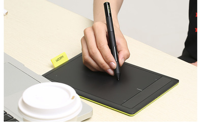

I draw using a Small Wacom One for hardware.
As for software, the older drawings were made on Paint Tool Sai, but now I am migrating to Krita.
The main reasons are that Krita is a free program, and compatible with Windows, MacOS and Linux. As I'm mainly working on Ubuntu right now, I needed an editor that runs on it.